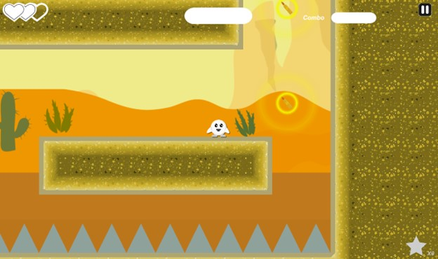
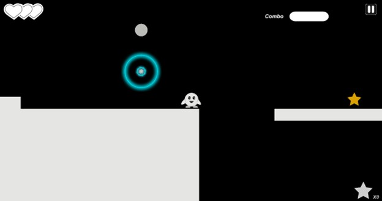
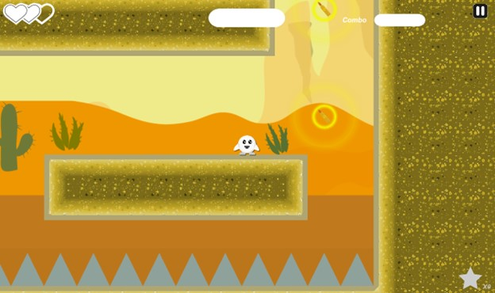
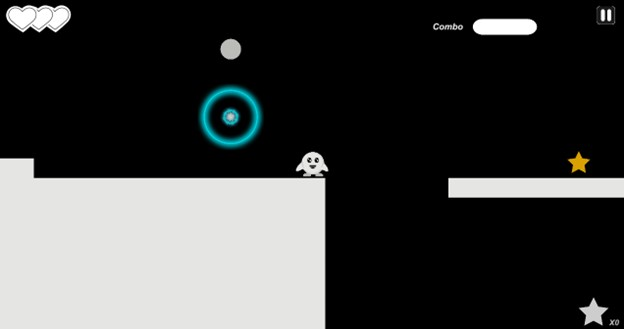

| Capstone Progress Week 13 |
We are nearing the end. I’m really starting to feel the effects of the crunch, but I am happy with the progress we’ve been making the past few weeks.
In preparation for a mini showcase open to other students attending the college, I decided to go through our scenes and do some polishing.
In level 1, I fixed some issues with icicles getting the player soft locked. All I really had to do here was space them better and get rid of some redundant ones.
In level 2, I added a simple tile map to the snake boss room. I also added some funny looking walking animations to the deputies.
The sheriff also watches over his deputies now.
 I kept fixing some more minor issues like sounds playing on start and glows not appearing in the right areas. Level 1 was complete, so I’ve mostly been focusing on level 2.
To fit the theme of the western style, I changed the parry objects to rifle cartridges and gave them a yellow glow instead of the previous blue.

Will suggested that we re-implement our previous prototype level as a tutorial.
I thought it was a great idea since the first level is difficult for new players to test out the mechanics.
I started by shrinking the level to about half the original size and made the parry and destroyable objects the priority.
This level is accessed anytime from the map and is unlocked by default. You can also skip it by loading up the first level.

Kaleb and I implemented some menu button interaction sounds.
There were some issues with the sound manager we previously worked on so Will, and I re-worked some of its code to make it simpler to implement multiple sounds.
Will finished level 3’s outline, so I implemented the parallax background, and some missing sprites into it.
This level is taking a lot longer to develop than we had originally planned, and we are running into numerous issues as well.
We still hope to have this level in for the Level Up event next week, but we might have to scrap some of it in favor of polish.
I kept fixing some more minor issues like sounds playing on start and glows not appearing in the right areas. Level 1 was complete, so I’ve mostly been focusing on level 2.
To fit the theme of the western style, I changed the parry objects to rifle cartridges and gave them a yellow glow instead of the previous blue.

Will suggested that we re-implement our previous prototype level as a tutorial.
I thought it was a great idea since the first level is difficult for new players to test out the mechanics.
I started by shrinking the level to about half the original size and made the parry and destroyable objects the priority.
This level is accessed anytime from the map and is unlocked by default. You can also skip it by loading up the first level.

Kaleb and I implemented some menu button interaction sounds.
There were some issues with the sound manager we previously worked on so Will, and I re-worked some of its code to make it simpler to implement multiple sounds.
Will finished level 3’s outline, so I implemented the parallax background, and some missing sprites into it.
This level is taking a lot longer to develop than we had originally planned, and we are running into numerous issues as well.
We still hope to have this level in for the Level Up event next week, but we might have to scrap some of it in favor of polish.
Kaleb and I implemented some menu button interaction sounds. There were some issues with the sound manager we previously worked on so Will, and I re-worked some of its code to make it simpler to implement multiple sounds. Will finished level 3’s outline, so I implemented the parallax background, and some missing sprites into it. This level is taking a lot longer to develop than we had originally planned, and we are running into numerous issues as well. We still hope to have this level in for the Level Up event next week, but we might have to scrap some of it in favor of polish. |
|---|